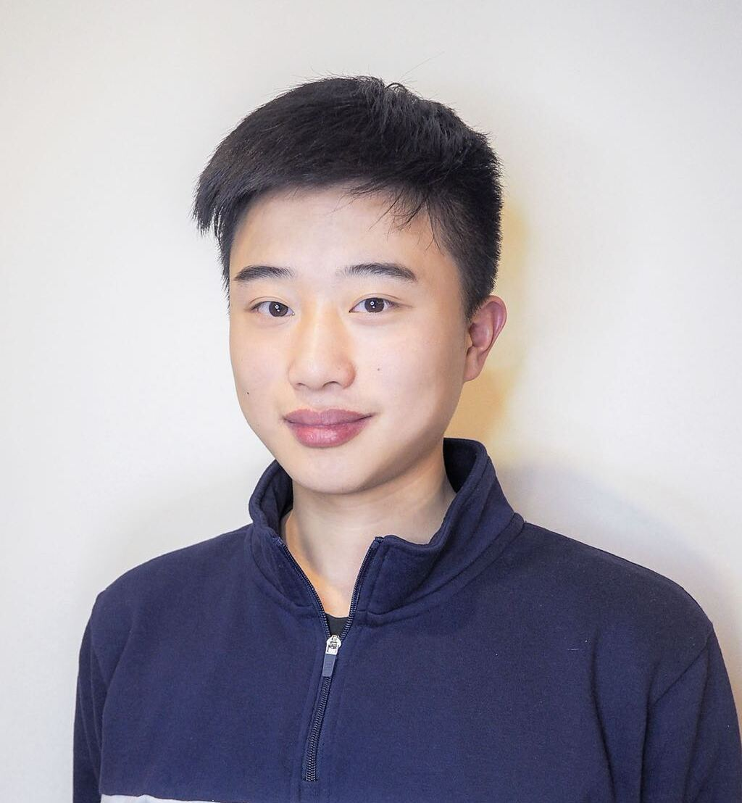

|  | Jiyang Zheng |
Profile
- I am a fourth-year undergraduate student at the Australian National University. I am also a research student at Imaging and Computer Vision Group, Data61, where I'm fortunate to be co-advised by Dr. Weihao Li and Prof. Nick Barnes.
- I am a TA at Research School of Computer Scienece (RSCS), ANU
News
- [04.2022] A paper on Open-set Object Detection accepted to L3D-IVD Workshop at CVPR 2022
- [03.2022] Our latest paper, GOSS is out. A novel task to generalise open-set semantic segmentation network.
Research Interests
- My research interest lies at the intersection of computer vision and machine learning. My current research direction is open-set learning, which tackles the problem of training deep neural networks that can handle out-of-distribution data, with a focus on the downstreams tasks like object detection and segmentation
Education
Undergraduate (02.2019 - present)- B. Advanced Computing (Honours), College of Engineering and Computer Science, ANU
Experience
Teaching Assistant at RSCS, ANU(07.2020 - present)- Courses: Computer Vision, Introduction to Machine Learning, Relational Databases, Software Design Methodologies, Introduction to Data Management, Analysis and Security
- Topics: object detection, semantic segmentation, open-set learning, self-supervised learning
- Advised by Dr. Weihao Li and Prof. Nick Barnes
Publications
Services
- Conference review CVPRW 2022
Skills
- Programming Language Proficient in Python; Familiar with Java, MATLAB, C++
- Tool NumPy, PyTorch, Git, LaTeX
- Language English (Proficient), Madarian (Native)
Awards
- Chancellor Outstanding Academic Achievement Award, 2020 for excellent academic performance at ANU
- Undergraduate Vacation Scholarship, 2021 for summer research at Data61, CSIRO
Unique Visitors since April 2022